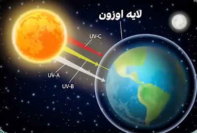
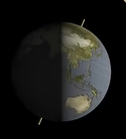
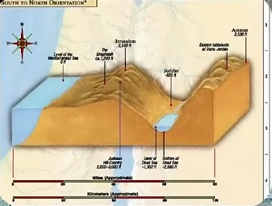

برای دیدن پاسخ، ابتدا ویدیو را تا انتها تماشا کنید.
# جواب
اخرین پیامبر حضرت محمده که ۱۴۰۰ سال قبل آمده
و قرار هم نبوده پیامبر دیگه ای بیاد
چون اخرین پیامبر بوده
و معجزه هم برای اثبات ادعای پیامبری
وقتی پیامبری نیست
چرا باید عصا تبدیل به مار بشه ؟
چرا باید دریا شکافته بشه ؟
چرا باید مُرده زنده بشه ؟
اما معجزه آخرین پیامبر موجوده
و اتفاقا دوربین هم ثبتش کرده
کشف اثر انگشت توسط علم
237 سال قبل بوده
اما قران 1400 سال قبل بهش اشاره میکنه
سوره قیامت آیات 3 و 4
کشف نیروی جاذبه توسط نیوتن
فقط 338 سال قبل بوده
اما قران 1400 سال قبل بهش اشاره میکنه
سوره مرسلات آیات 25 و 26
کشف لایه اوزون توسط علم 112 سال قبل بوده
اما قران 1400 سال قبل میگه "آسمان را سقف محفوظ قرار دادیم"
سوره انبیاء ایه 32

نیکولاس کوپرنیک در قرن 16 میلادی
نظریه چرخش زمین و تغییرات شب و روز را مطرح میکنه
یعنی حدود 500 سال قبل
اما قران 1400 سال قبل
در آیه 5 سوره زمر به این موضوع اشاره میکنه

کشف پایین ترین سطح خشکی توسط علم
70 سال قبل بوده
اما قران 1400 سال قبل
صراحتا به این موضوع اشاره میکنه
سوره روم ایه 3

با ثبت اینهمه معجزه اما جهالت همچنان پا برجاست
نکات تکمیلی
قرآن بهعنوان معجزهی پایدار پیامبر اسلام، در طول تاریخ بارها مورد
توجه دانشمندان و محققان قرار گرفته است.
بسیاری از اعجازهای علمی قرآن بعدها با کشفیات علمی مدرن تطبیق داده
شدهاند؛ از جمله بحث حرکت زمین، شکل جنین و ساختار لایههای آسمان.
مفسرانی چون طبری و زمخشری در
قرون گذشته به جنبههای زبانی و اعجاز بیانی قرآن پرداختهاند و
امروز پژوهشگران علوم طبیعی بُعد علمی آن را نیز برجسته میکنند.
در کتابهایی مانند «اعجاز علمی قرآن» اثر
دکتر زغلول النجار نمونههای متعددی از این
تطبیقها گردآوری شده است.
بنابراین معجزات محدود به تاریخ کهن نیستند، بلکه میراثی زندهاند که
با هر پیشرفت علمی دوباره معنا مییابند.